Additional hardware#
All hardware on this page is optional. Add what you need, when you need it.
| Hardware | Connects to | Typical use | |
|---|---|---|---|
| Push buttons | any free GPIO pin + GND | start/stop recording, change resolution | 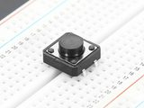 |
| Two- and three-way switches | GPIO pins + GND | zoom, shutter sync mode, fps presets | 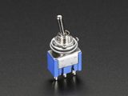 |
| Rotary encoders | two GPIO pins (+ button pin) + GND | stepping ISO, shutter angle, fps, WB | 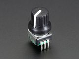 |
| Potentiometers | a Grove Base HAT analog port | dials for ISO, shutter angle, fps, WB | 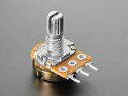 |
| Grove Base HAT | GPIO header | analog inputs for potentiometers | 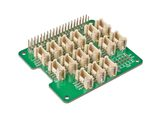 |
| Adafruit quad rotary encoder | I²C (STEMMA QT or SDA/SCL pins) | four dials and push buttons in one module | 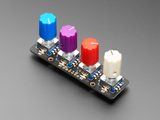 |
| CFE Hat | PCIe (Raspberry Pi 5 only) | fast storage (CFexpress Type B) | 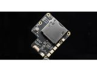 |
| LEDs | a GPIO out pin + GND, via a resistor | rec tally lamp | |
| Resistor | in series with an LED | limits the LED's current; 220 Ω is a good value | 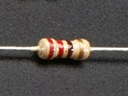 |
| I²C OLED display | I²C (SDA/SCL pins) | status screen: ISO, timecode, space left | 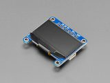 |
| Real-time clock | I²C (SDA/SCL pins) | keeps the clock across a power cycle, Pi 4 only | 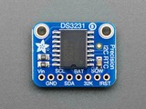 |
Physical controls are mapped in the settings file. Type editsettings on the Pi to open it or use the Web UI. Changes apply at the next CineMate start. Controls call the same commands as the CLI and web GUI, listed under commands reference.
CineMate uses BCM pin numbering
The numbers CineMate wants are the GPIO n labels, not the physical pin positions. GPIO 7 is physical pin 26, and GPIO 21 is physical pin 40. Full interactive reference: pinout.xyz.
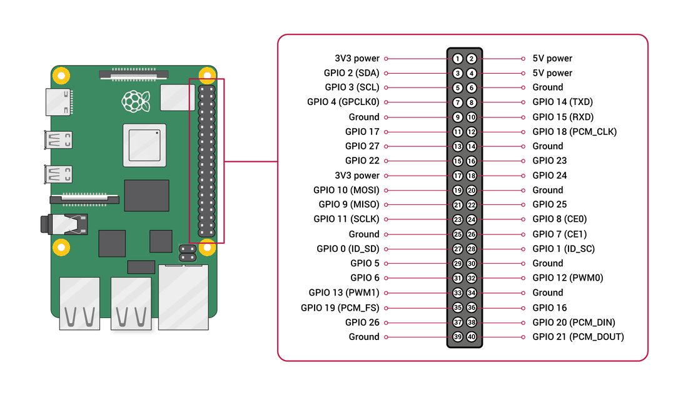
GPIO controls in the settings editor#
Buttons#
- On the settings.jsonc tab, click Buttons & switches in the left rail.
-
Click + Add button. A row appears at the bottom, GPIO None, one line: Press → No action.
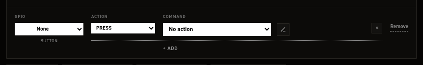
-
Open the row's GPIO dropdown and pick GPIO 26, or any pin listed in black. The stock file holds 7, 9, 10, 11, 13, 18, 21, 22 and 24.
- Remap this control? appears, reading "Move a button to GPIO 26?". Click Remap.
- On the Press line, open COMMAND and pick Start / stop recording, under Record.
- Click Save changes.
CineMate restarts and the button is live.
More gestures on the same button#
| Gesture | Fires |
|---|---|
| Press | Immediately on press |
| Single click | One short click, 0.5 s after release |
| Double click | Two quick clicks |
| Triple click | Three or more quick clicks |
| Hold | Button held for 3 seconds |
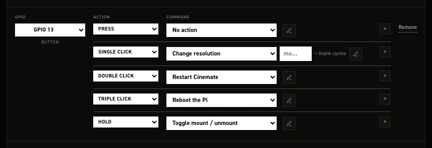
The argument box#
The box after the command is its argument. This can be used when you want the control to set a specific value.
| Blank | Each trigger |
|---|---|
| Cycle through the list | Steps to the next value in Value steps |
| Toggle on / off | Inverts the current flag |
| Needs a value — | Does nothing until you pick one |
2-way and 3-way switches#
Switches react to position. At startup CineMate reads the current position and runs its line, so the camera always matches the switch.
+ Add 2‑way switch creates one pin and two lines:
| Line | Runs when |
|---|---|
| On | The pin reads closed |
| Off | The pin reads open |
+ Add 3‑way switch creates three pin dropdowns, pin 1, pin 2, pin 3, and three lines:
| Line | Runs when |
|---|---|
| Position 1 | pin 1 is the active input |
| Position 2 | pin 2 is the active input |
| Position 3 | pin 3 is the active input |
All three pins must be set. With no input active, no line runs.
Typical 2‑way pairing: Set preview zoom at Set to 2× on On, Set to 1× on Off.
Rotary encoders#
+ Add rotary encoder creates three pin dropdowns, CLK, DT and BTN.
| Pin | Required |
|---|---|
| CLK | Yes |
| DT | Yes |
| BTN | No; leave None if the encoder has no push button |
The row starts with a single Button press line; + Add offers the rest.
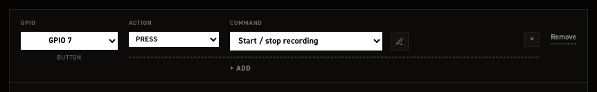
| Line | Fires |
|---|---|
| Button press | Press of the encoder's push button |
| Button hold | Push button held |
| Rotate CW | One step clockwise |
| Rotate CCW | One step counter‑clockwise |
Each encoder row carries an enabled flag in hardware_controls.rotary_encoders. The stock file
ships it true; set it to false to keep a row's wiring on file while switching it off. A row
with no enabled key at all is on.
The Adafruit Quad Rotary Encoder i²c board#
Sits below the GPIO in list with its own + Add encoder. Its rows address the board's four encoders, not GPIO pins, so the left column offers None and Encoder 0 through Encoder 3.
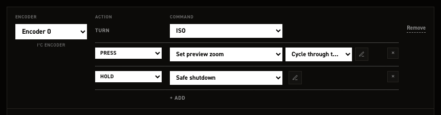
+ Add encoder claims the lowest free encoder index. Set the Turn line, what rotating the dial cycles, then add button gestures with + Add as on a GPIO button.
Turn offers Nothing, ISO, Shutter angle, Frame rate, White balance, Resolution, Preview zoom, Nominal shutter angle, HDR threshold low, HDR threshold high, HDR blend, HDR gain adder.
The push button below Turn takes the full button grammar.
With all four configured, + Add encoder reports "All four encoders are already configured". The stock file configures all four encoders and ships the board on: input_peripherals.quad_rotary_controller.enabled is true, and CineMate only sets the board up when it is. Set it to false if you are not running the board.
GPIO out: tally and slate tone#
Put a resistor in series with an LED
A GPIO pin drives 3.3 V and an LED is not current-limited on its own. Wired straight to the pin it will draw more than the pin can safely give and can damage both. Put a resistor in series with it, typically 220 Ω, between the pin and the LED's long leg (anode), with the short leg (cathode) to GND. Anything from about 150 Ω to 1 kΩ works; higher is dimmer and safer. A relay or an opto-isolated tally box has its own driver and does not need one.

- Click Rec tally & GPIO out in the left rail.
- Click + Add pin. A row appears with Output on None and a While rec line set to REC tally.
- Pick the pin from Output and confirm the remap.
- For a sync tone instead of a lamp, change While rec to REC tone.
REC tone reveals an at … Hz field in the row, and one card below the list:
| Card | Sets |
|---|---|
| Mute the tone on a dropped frame | Cuts the tone for about one frame when the camera drops one |
One frequency serves every tone pin, edited in the row next to the pin it applies to. Duty cycle is fixed at 50% and has no field. The card is hidden while no pin is set to REC tone. Add as many tally and tone rows as you are wired for.
Some push buttons are wired closed = 1 and open = 0. At startup CineMate detects buttons that read as pressed and reverses them, so both types work without special configuration.
Only assign pot channels that have a potentiometer connected. Unconnected analog inputs pick up noise and can trigger false readings.
CFE Hat#
The CFE Hat by Will Whang adds a CFexpress Type B card slot to the Raspberry Pi 5 over PCIe.
No configuration needed. CineMate detects the hat at startup and shows CFE as the media type. Format the card exFAT and label it RAW, like any recording drive: the RAW files pane has a format button, format exfat does the same in the CLI.
Real-time clock#
Only needed on a Raspberry Pi 4. The Pi 5 has an RTC on board; fit its battery and it keeps time on its own.
A Pi 4 has no clock that survives a power cycle. Left alone it boots believing it is whenever it last shut down, and every take is stamped with that wrong date. A DS3231 module on the I²C pins fixes it.
The system clock corrects itself whenever the Pi can reach the internet — over Ethernet, or over Wi-Fi while joined to a network rather than serving its own hotspot. Plugging into a computer that is online is enough. That sets the system clock only. The module keeps whatever it was last given until you copy the corrected time across:
set rtc time
time prints both clocks, so you can check they agree before going out to shoot.
The overlay is not managed for you
CineMate owns its own fenced block in config.txt and does not put an RTC overlay in it. Add the
standard dtoverlay=i2c-rtc,ds3231 line yourself on the config.txt tab, outside
the managed block, where it survives updates. Without it there is no /dev/rtc for hwclock to
talk to and both commands above will report that they cannot reach the clock.
Outputs and displays#
- Rec light (tally LED) –
hardware_outputs.rec_out_pin(GPIO 21 stock) goes high while recording. - Rec sync tone –
hardware_outputs.rec_tone.pin(GPIO 18 stock) outputs a 1 kHz tone while recording. - I²C OLED display – an SSD1306 or SSD1309 status screen showing values you choose (ISO, timecode, write speed, disk space…). The SSD1309 takes the same commands and the same addresses as the SSD1306, so it needs no separate setting — it just works. Enable it in
output_peripherals.oled.
Reference: hardware_outputs, output_peripherals, settings.jsonc, CineMate terminal commands.